Configuración de sistema operativo Windows¶
Windows 10 es uno de los sistemas operativos más utilizados en todo el mundo. Ofrece un entorno gráfico intuitivo, fácil de manejar y compatible con una gran variedad de programas, lo que lo convierte en una opción muy cómoda para el trabajo diario del alumnado.
Desde su lanzamiento en 2015, Windows 10 ha sido un sistema operativo orientado a la nube y actualizado de forma continua. Durante años recibió dos grandes actualizaciones anuales con nuevas funciones, mejoras de rendimiento y parches de seguridad. Aunque Microsoft ya no incorpora grandes novedades, sigue ofreciendo actualizaciones de seguridad en función de la edición del sistema, con soporte que se extiende en algunos casos hasta 2028.
Aunque actualmente Windows 11 es la versión más reciente del sistema operativo de Microsoft, en clase trabajamos con Windows 10 por una razón práctica: requiere menos recursos y ocupa menos espacio, lo que permite que funcione mejor en ordenadores educativos con hardware más limitado. Esto facilita que todo el grupo pueda trabajar sin problemas de rendimiento.
Iniciar sesión¶
Al encender el equipo, aparecerá la pantalla de bloqueo con la fecha y la hora.
Pulsa cualquier tecla o haz clic para acceder a la pantalla de inicio de sesión, donde deberás escribir tu contraseña o PIN para acceder al escritorio.
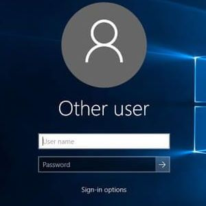
Cerrar sesión¶
Para cerrar sesión o cambiar de usuario, haz clic en el menú Inicio, selecciona tu nombre de usuario y elige la opción Cerrar sesión o Cambiar de usuario.
Si cambias de usuario, las aplicaciones seguirán abiertas y podrás retomar tu sesión más tarde sin perder el trabajo.
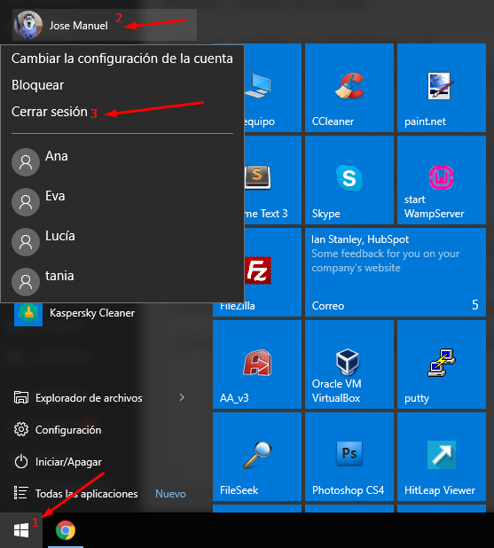
Reloj y calendario¶
El reloj y el calendario se encuentran en la esquina inferior derecha de la barra de tareas.
Al hacer clic sobre ellos, podrás consultar la hora, ver el calendario mensual y acceder a las notificaciones del sistema o recordatorios de eventos.
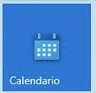
Información y configuración del sistema¶
Desde el menú Inicio → Configuración → Sistema → Acerca de, puedes ver la información del dispositivo: nombre del equipo, versión de Windows, procesador, memoria y tipo de sistema.
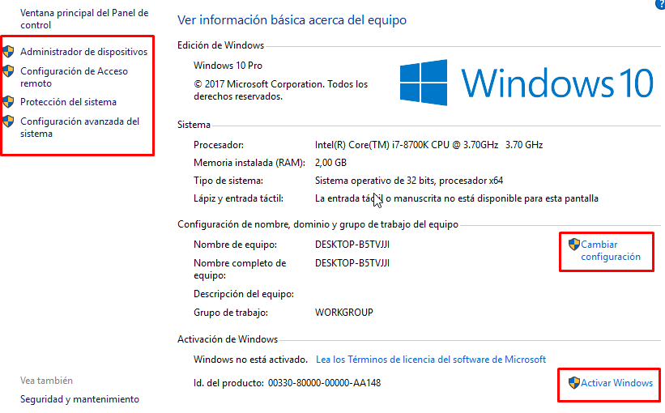
También desde el menú de configuración se accede a los ajustes de pantalla, sonido, batería, red y actualizaciones.
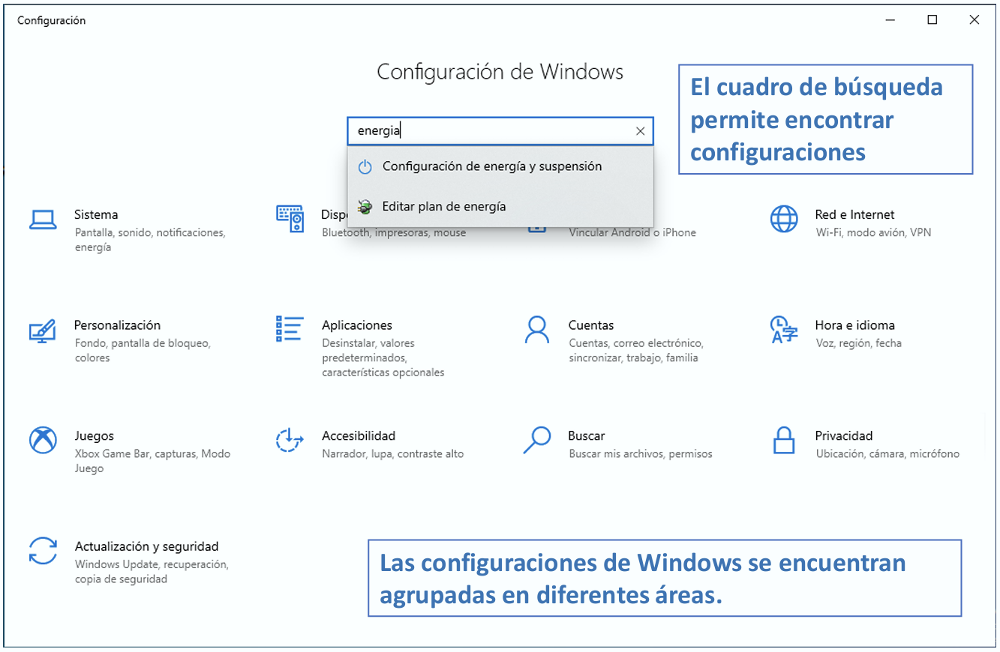
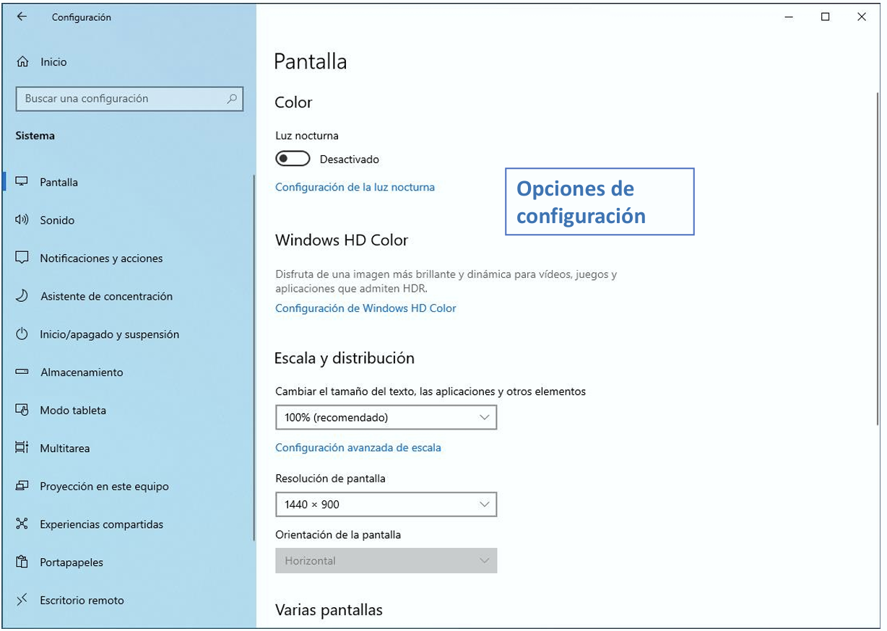
Desde el área de personalización podemos cambiar el fondo de pantalla, los colores, aplicar temas, cambiar el tamaño de las fuentes…
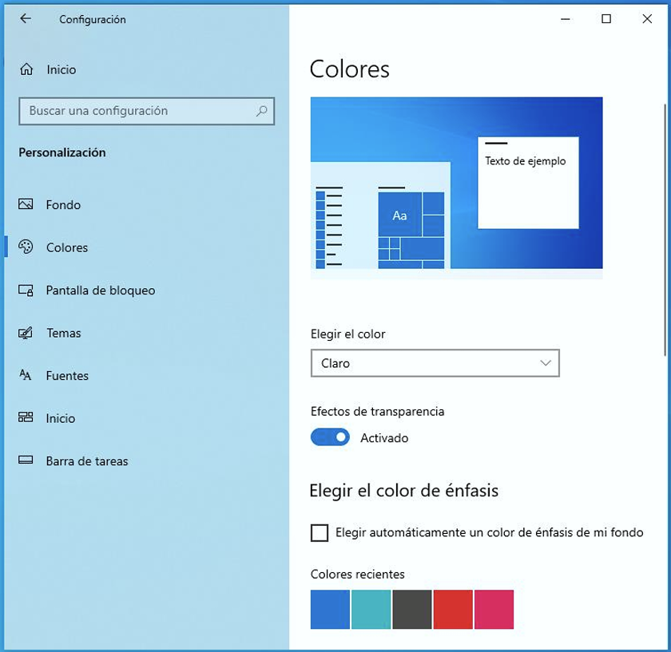
Cuentas de usuario¶
Cada persona puede tener su propia cuenta para mantener sus archivos y configuraciones separadas.
Desde Configuración → Cuentas → Tu información, se pueden crear nuevas cuentas locales o con Microsoft, cambiar contraseñas y gestionar accesos.
- Cuentas locales: Una cuenta local permite iniciar sesión en un equipo.
-
Cuentas microsoft: Una cuenta Microsoft permite iniciar sesión en varios equipos. Como ventajas destacamos:
- Se puede sincronizar configuraciones como el fondo de escritorio, temas, contraseñas y otras configuraciones.--
- Puede ser necesaria para instalar ciertas aplicaciones de la Tienda Microsoft
- Es necesaria para usar determinados servicios como Office 365 o Cortana.
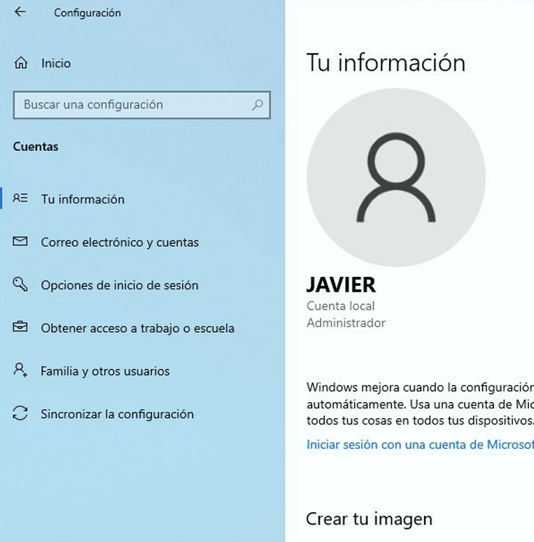
Existen dos tipos de usuarios: administrador y usuario estándar:
- Cuentas de administrador: Tienen permisos completos para cambiar ajustes, instalar software y modificar cuentas de otros usuarios. Son indispensables para el mantenimiento y la gestión del sistema, pero su uso indebido puede ser peligroso para la integridad del propio sistema.
- Cuentas de usuario estándar: estas cuentas tienen acceso limitado, adecuado para tareas diarias. No pueden realizar cambios críticos en el sistema, lo cual protege la integridad del sistema operativo.
Estas dos son las dos cuentas principales presentes en todos los sistemas operativos. Luego, cada sistema operativo puede tener otro tipo de cuentas como Invitado o Superadministrador; cada una de ellas con permisos específicos para poder completar las tareas para las que tienen privilegios.
Interfaz de usuario¶
En el interfaz de usuario encontarás:
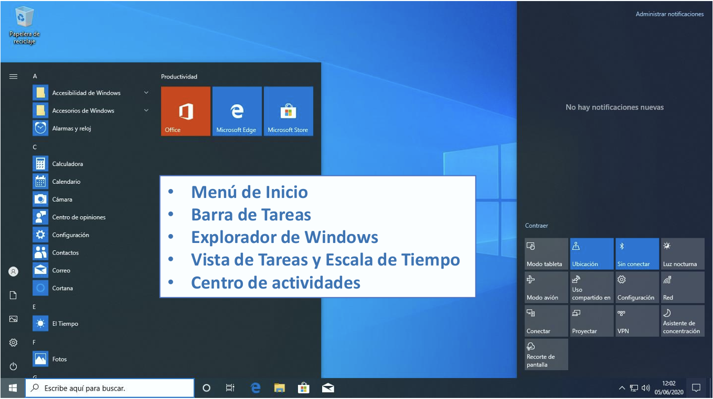
- Menú de inicio: Permite acceder rápidamente a las aplicaciones instaladas, a la configuración del sistema y a documentos recientes. Es el punto principal desde el que el usuario inicia la mayoría de tareas.
- Barra de tareas: Muestra las aplicaciones abiertas y permite anclarlas para un acceso más rápido. Incluye también la zona de notificaciones, el reloj y accesos como el control de volumen o la conexión a internet.
-
Explorador de windows: Nos permite un acceso rápido a carpetas y archivos. Presenta una cinta de opciones donde encontramos las opciones más usadas como Nueva Carpeta, Copiar, Pegar….
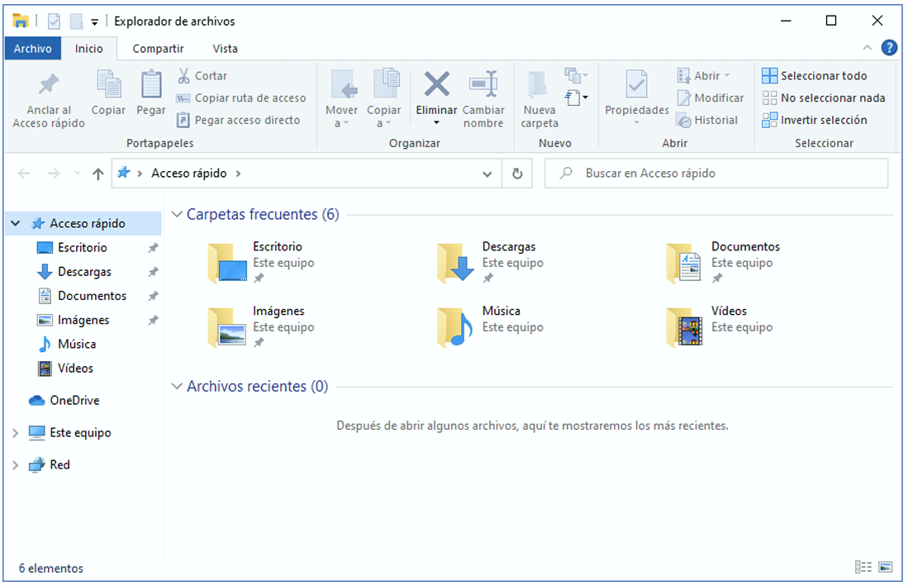
Visualizador de tareas -
Visita de tareas y escala en el tiempo: Windows 10 permite visualizar aplicaciones abiertas. Muestra un historial de aplicaciones y páginas web visitadas recientemente. Se accede mediante el botón Vista de tareas (junto al buscador
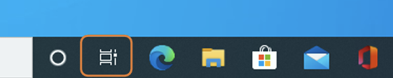
) o presionando Windows + Tab.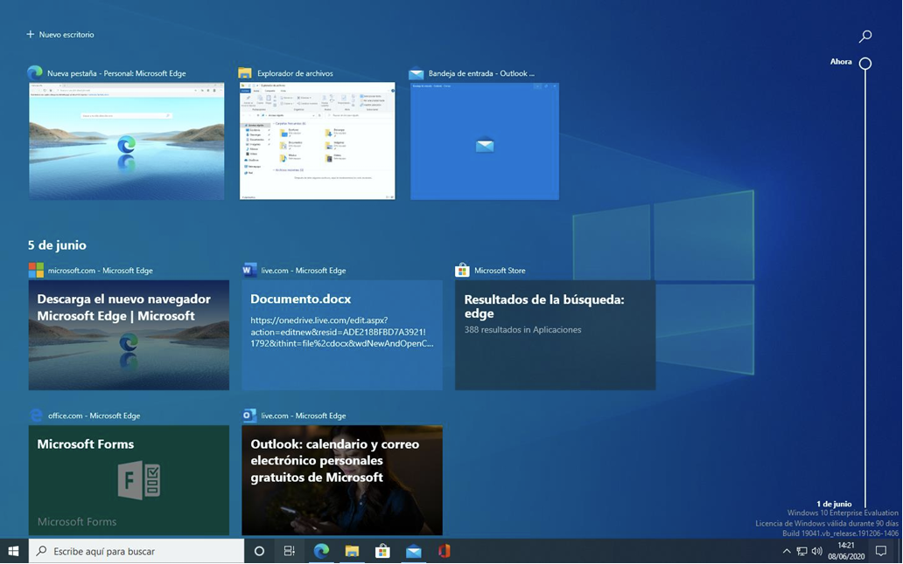
Visualizador de tareas -
Centro de actividades o Área de notificaciones: Cualquier tipo de notificación de las aplicaciones Windows aparecerán en esta área. Tiene un panel de acciones rápidas relacionadas principalmente con la conectividad y movilidad.
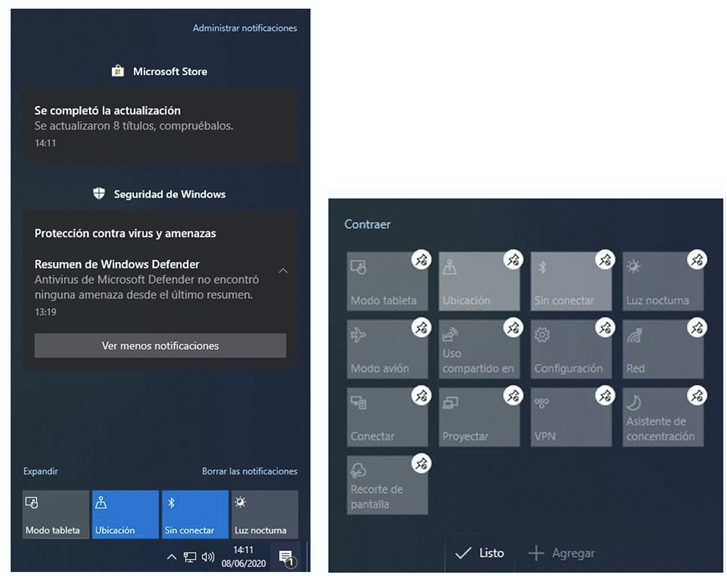
Centro de actividades
Aplicaciones¶
Windows 10 incluye una Microsoft Store, que permite instalar, actualizar y eliminar aplicaciones de forma segura y sencilla.
Desde ahí puedes encontrar programas de productividad, educación, comunicación o entretenimiento.
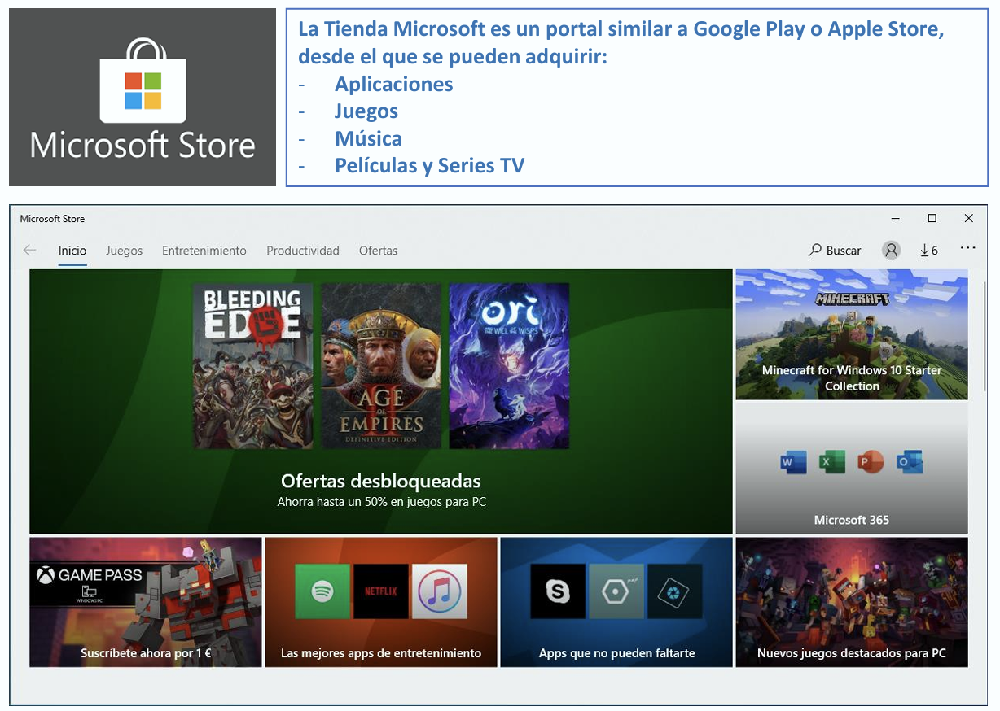
Windows 10 revisa de todas las aplicaciones de la Tienda Microsoft, también las que vienen incluidas con el sistema operativo, se actualicen de forma automática. También se pueden obtener actualizaciones de forma manual.
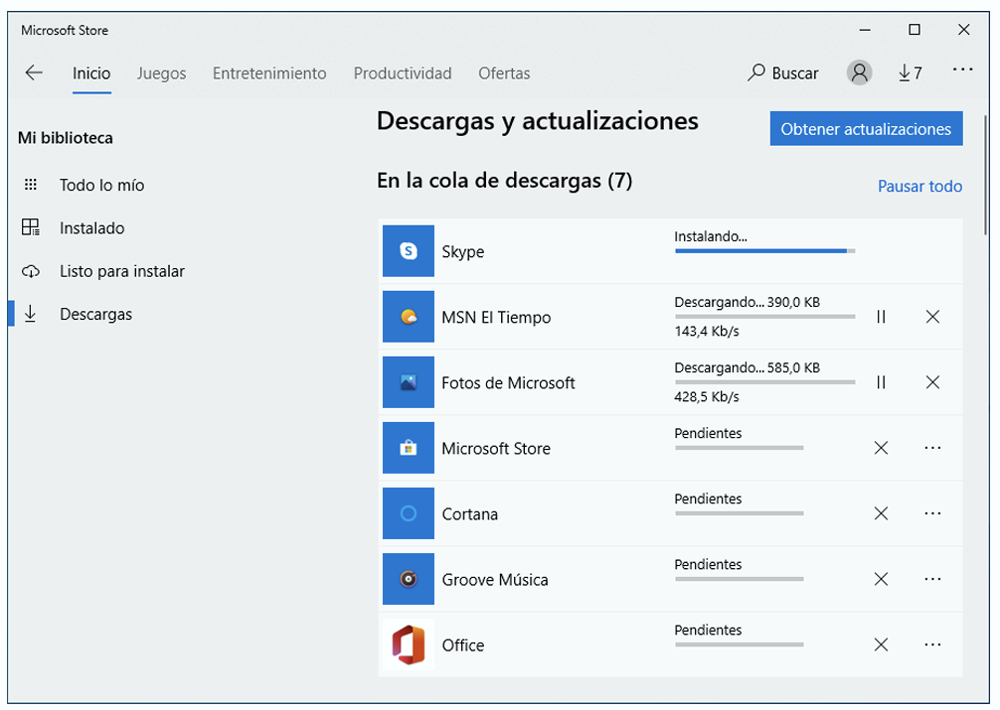
En Aplicaciones y Características podemos ver todas las aplicaciones instaladas. Existe un cuadro de búsqueda que nos permite buscar aplicaciones. Para desinstalar una aplicación, basta con seleccionarla y dar al botón Desinstalar.
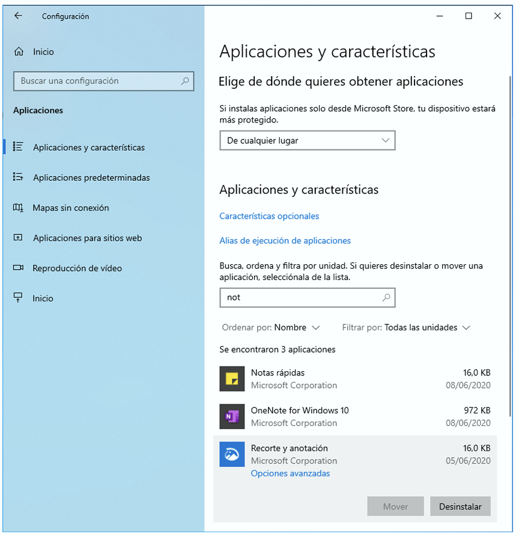
Monitorización¶
Windows 10 incluye varias herramientas que ayudan a supervisar el estado del equipo y a realizar tareas básicas de mantenimiento. Estas funciones permiten comprobar que el hardware funciona correctamente y anticipar posibles fallos.
Desde el menú Inicio, en Herramientas administrativas, encontramos utilidades como:
- Desfragmentación y optimizar unidades: analiza y optimiza el disco duro para mejorar el rendimiento. En discos mecánicos reorganiza los datos para que el acceso sea más rápido; en unidades SSD realiza tareas de mantenimiento específicas.
-
Monitor de rendimiento: muestra estadísticas detalladas del uso de CPU, memoria, disco y red. Es útil para detectar cuellos de botella o comportamientos anómalos.
El Administrador de tareas, que nos ofrece una visión rápida del estado del sistema. Consta de varias pestañas, cada una útil para supervisar un aspecto distinto del equipo:
- Procesos: muestra todos los programas y servicios que están en ejecución. Aquí podemos ver qué aplicaciones consumen más recursos (CPU, memoria, disco o red). Es muy útil para detectar aplicaciones bloqueadas o posibles amenazas como malware.
- Rendimiento: ofrece gráficos en tiempo real del uso de los componentes principales del sistema: CPU, memoria RAM, disco, red y GPU. Si el equipo va lento, esta pestaña ayuda a entender cuál es la causa.
- Historial de aplicaciones: muestra el consumo de recursos de las aplicaciones de Windows a lo largo del tiempo.
- Inicio: lista las aplicaciones que se abren automáticamente al encender el ordenador. Desactivar las que no son necesarias puede mejorar el tiempo de arranque.
- Usuarios: muestra las cuentas activas y el consumo de recursos de cada una.
-
Detalles y Servicios: ofrecen una vista más avanzada de los procesos y servicios del sistema. Suelen usarse para diagnósticos más técnicos.
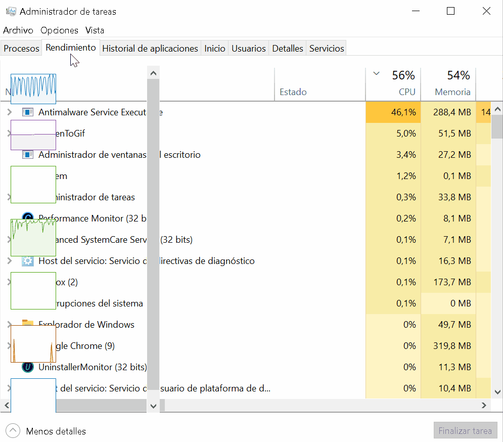
Administrador de tareas
-
Visor de eventos: registra errores, avisos y sucesos importantes del sistema, lo que facilita localizar problemas técnicos.
- Programador de tareas: permite automatizar tareas como limpiezas, análisis o actualizaciones.
Actividades¶
📝 AA3.13 Configuración de Windows¶
(C.ESP2 / CE2.3 / IC1-3p)
- Haz una captura de pantalla del panel de control de tu sistema operativo y pégala en el documento.
- Haz un listado de las principales herramientas del panel de control, y qué podemos configurar en cada una de ellas.
- ¿Qué es el desfragmentador de disco duro?
- Haz una captura de imagen del estado de tu disco duro (ejecutar el desfragmentador y hacer clic en analizar).
- Cambiar fondo pantalla. Haz una captura de pantalla de tu nuevo fondo.
- Buscar todos los programas y aplicaciones preinstalados. Haz una captura de pantalla.
📝 AA3.14 Configuración de aplicaciones en Windows¶
(C.ESP2 / CE2.4 / IC1-3p)
- Cuentas locales: A continuación, debes de crear una nuevas cuentas de usuario local que tenga como identificador tus iniciales.
-
Punto de restauración: Es una “copia” del estado del sistema en un momento concreto. Guarda información esencial del sistema operativo, como:
- Configuración de Windows
- Archivos del sistema
- Controladores (drivers)
- Aplicaciones instaladas
- No guarda documentos personales (fotos, vídeos, trabajos…), solo la configuración del sistema.
Sirve para volver atrás si algo sale mal. Por ejemplo, si después de instalar un programa, un controlador o una actualización el ordenador empieza a fallar, podemos restaurar el sistema a un punto anterior en el que todo funcionaba correctamente.
A continuación, debes crear un punto de restauración en tu máquina virtual de Windows.
💡 AAP3.15 Diagnóstico y mantenimiento real del sistema¶
(C.ESP2 / CE2.3 / IC1-3p)
-
Abre el Administrador de tareas y ve a la pestaña Rendimiento. Anota los siguientes datos en una tabla:
- % Uso CPU (en reposo)
- Memoria en uso
- Disco (actividad)
- Red (actividad)
-
Abre Monitor de rendimiento y crea un contador nuevo que muestre el uso de CPU. Haz una captura y explica qué representa el gráfico.
-
Abre el Visor de eventos → Registros de Windows → Sistema. Busca un evento marcado como Error o Advertencia en las últimas 24 horas. Indica:
- Nombre del evento
- Fecha y hora
- Descripción breve
Cuando termines, explica qué has analizado y qué resultados ha mostrado.
🔨 AAP3.16 Panel de Control y herramientas del sistema¶
(C.ESP2 / CE2.3 / IC1-3p)
- Abre el Panel de Control y selecciona la vista por Iconos grandes. Haz una captura de pantalla.
-
Localiza las siguientes herramientas y explica brevemente (en 1 frase cada una) qué permiten configurar:
- Sistema
- Pantalla
- Ratón
- Opciones de energía
- Sonido
-
Abre Administración de equipos (Menú Inicio → Botón derecho → Administración de equipos) y busca:
- El Visor de eventos
- El Administrador de discos
- Haz una captura de cada uno.
- Contesta con tus palabras: ¿Por qué es útil tener herramientas que permiten monitorizar el rendimiento del sistema?
🏆 PO3.17 Actividades de autoría¶
(C.ESP2 / CE2.3, CE2.4 / IC5-30p)
Prueba objetiva sobre los contenidos de la asignatura que constará de dos partes:
- Tipo test con 30 preguntas con una única respuesta correcta (3 mal quitan 1 bien).
- Preguntas de respuesta corta
- Actividad a resolver en 40 min y se realizará con el ordenador del aula.